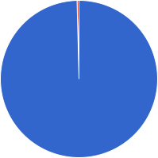
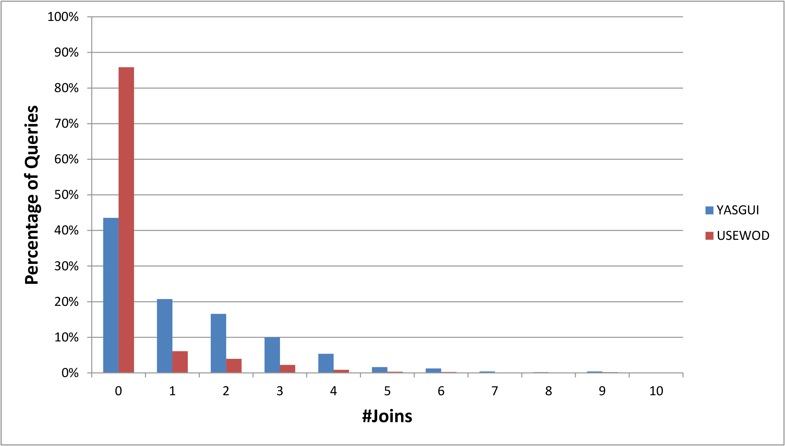
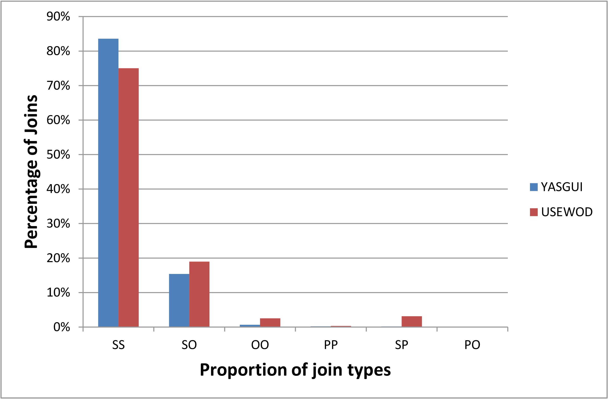

YASGUI
Feeling the pulse of Linked Data
Laurens Rietveld
VU University Amsterdam
http://presentations.laurensrietveld.nl/ekaw2014
What we (don't) know about the LOD Cloud
Strengths and weaknesses of server logs
Feature-set
- Full SPARQL 1.1 syntax support
- Full SPARQL query results support
- Auto-completion
- Syntax Highlighting
- Syntax Checking
- Access to any SPARQL endpoint
- Platform independent
- Retention of user settings
- Easily sharing queries
- Downloading results
Latest Numbers
- 80.000 queries
- 2. coming from 4600 users
- executed on ~600 endpoints
- All the statistics presented next, are based on this 57%
Relation to USEWOD
Relation to USEWOD
The Basics
Complexity
Endpoints
Endpoint stats
Actual use
YASGUI
- One feature-rich editor to access any (private or public) endpoint
- Queries and endpoints are logged (if permitted to do so) using google analytics
- Unique collection of queries, solely made by humans, spanning both private and public endpoints
Overview

- 60% agree to track site usage
- ~3.000 users
- ~45.000 queries
- ~500 endpoints
- Majority of queries executed on DBpedia
How to compare query sets
- Dissecting the query, and looking at the structural properties (Jena)
- Largely a similar approach as [1] and [2]
- Focus on DBpedia
- Purely observational: how do man-made queries differ from query logs
[1] Picalausa, Francois, and Stijn Vansummeren. "What are real SPARQL queries like?." Proceedings of the International Workshop on Semantic Web Information Management. ACM, 2011.
[2] Gallego, Mario Arias, et al. "An empirical study of real-world SPARQL queries." 1st International Workshop on Usage Analysis and the Web of Data (USEWOD2011) at the 20th International World Wide Web Conference (WWW 2011), Hydebarabad, India. 2011.
[2] Gallego, Mario Arias, et al. "An empirical study of real-world SPARQL queries." 1st International Workshop on Usage Analysis and the Web of Data (USEWOD2011) at the 20th International World Wide Web Conference (WWW 2011), Hydebarabad, India. 2011.
Use of SPARQL grammar
| YASGUI | USEWOD | |
|---|---|---|
| # syntactically valid queries | 12.242 | 100.763 |
| % unique queries | 65.73% | 69.67% |
| SELECT | 93.91% | 96.17% |
| DESCRIBE | 0.72% | 3.00% |
| CONSTRUCT | 1.49% | 0.56% |
| ASK | 3.87% | 0.26% |
| ORDER BY | 18.64% | 6.37% |
| DISTINCT | 15.07% | 24.37% |
| LIMIT | 42.32% | 12.13% |
| OFFSET | 0.14% | 0.75% |
| FILTER | 30.35% | 15.11% |
| Subquery | 2.82% | 0.37% |
| SERVICE | 0.91% | 0.08% |
| ≥ 1 UNION in query | 24.04% | 4.46% |
| ≥ 1 OPTIONAL in query | 1.71% | 3.14% |
Triple pattern types
| YASGUI | USEWOD | ||
|---|---|---|---|
| VCC | 45.91% | 19.92% | e.g. ?sub rdf:type foaf:person |
| VCV | 36.22% | 19.06% | |
| CCV | 7.10% | 42.71% | |
| CVV | 2.95% | 6.10% | |
| VVC | 2.88% | 3.92% | |
| VVV | 1.61% | 1.88% | |
| CCC | 0.28% | 0.17% | |
| CVC | 0.12% | 0.06% | |
| V*V | 0.30% | 0.10% | e.g. ?x foaf:knows/foaf:name ?name |
| V*C | 2.59% | 6.01% | |
| C*V | 0.05% | 0.08% | |
| C*C | 0.00% | 0.00% |
#Triple Patterns per query (log)

#Joins in queries
Proportion of join types
To Finalize
- Server query logs and user query sets differ greatly in structure
- Human queries are larger, more complex, more joins, and use more SPARQL features
- Particularly interesting to research related to users on the Web of Data
- Large range of endpoints for which we collect logs
- Future: publish YASGUI logs (Piwik)
- Future: broader analysis of the LOD cloud
Use of the LOD cloud